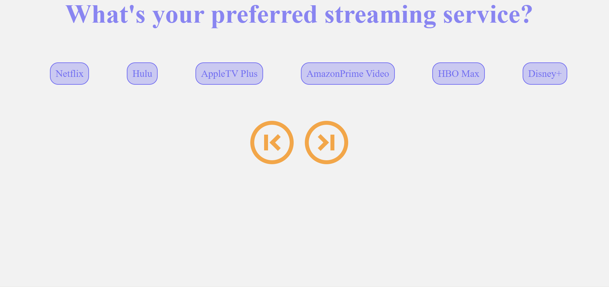

Chase Olshen
My name is Chase Olshen and I am from California I am a determined and motivated individual that is energized in the field of Technology doing Software Engineering. I am proficient in Javascript, Full Stack Web Development, CSS, HTML, Web APIs and other coding languages.
Experience
Coding Bootcamp
•Beginner in Hypertext Markup Language, Cascading Style Sheets, JavaScript, Git bash, VS Code
•Proficient in hosting services include Git Hub, Git lab and Slack
Senior Internal Quality Control Specialist Associate
•Performed Quality Control on Incoming/receiving of medical devices from implants, depth gages, k-wires, drivers, drills and Finished goods packaging
•Used calibrated Go/no gauges, calipers micrometers, pin gauges, and over lays to perform quality testing on medical devices
•Worked alongside vendors and manufacturers to make sure medical devices and finished goods were up to date on certifications and quality
•Maintained Raw material and Finished goods inventory and auditing, FDA approved
•Handled Inbound/Outbound production builds of raw materials to manufacturers
•Shipped Finished goods local, national, and international Hospitals
•Proficient in operating systems inclusive of NetSuite, Egnyte and DOMO
Contract Lab Associate
• Lab Associate in the Micro-Infectious Disease Department specializing in COVID/SARs diagnostics
• Verified test culture and record pairs. Prepared raw patient data for installation in various test apparatuses, including: MagnaPure96, Big Neat, and Hamilton. Cleaned and maintained equipment up to date.
• Performed DNA extraction that work in multitude of instruments, these encompassed MagnaPure96 and Hamilton
• De-swabbed test samples for preparation in Big Neat and capping
Research and Development Specialist
• Performed comprehensive lab experiments
• Executed and managed UV-Vis Spectrometer, Analytical Balance and FTIR Spectrometer
• Oversaw Raw Material Sourcing and detailed documentation
• Performed outreach to perspective hospitals to evaluate specific products
Education
Michigan State University
Undergraduate
University of Irvine
Certification Bootcamp
Newport Harbor Highschool
General Highschool Diploma
Skills
- HTML, CSS, JavaScript, Web API, JQuery
- Git lab, Git Hub, Slack, Git Bash, VS Code, DOMO, NetSuite
- Lab Technology - Origins, MagnaPure96, Big Neat, Hamilton, HPLC, UV-Vis Spectrometer, FTIR Spectrometer, ICP & AA, EChem and GC/MS Chromatography
- Languages English (Native) and Spanish (Beginner)
Projects

A simple web app that randomly generates a movie or show to watch based on user input criteria.

A travel app that generates information about flights, and costs based on a set criteria.

Creating a database that uses MySQL and allows you to store Employees into a database.
Sources & Contact Info
- https://www.linkedin.com/in/chase-olshen-4b4401b4/
- https://github.com/pcchase617?tab=repositories
- https://gitlab.com/olshench
- Mentee - Newport Mesa Animal Hopsital - Dr. Tom Irwin
- Email - olshench@msu.edu
- Mobile Phone - (801)631-4579
- Address - Huntington Beach, California